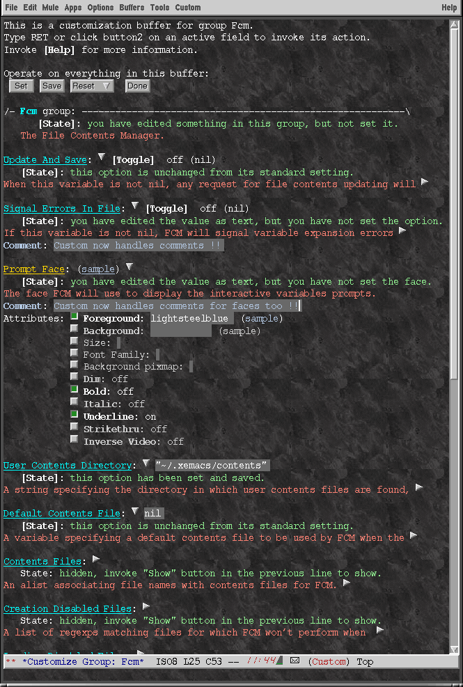
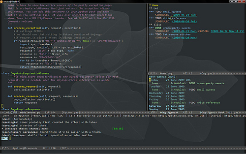
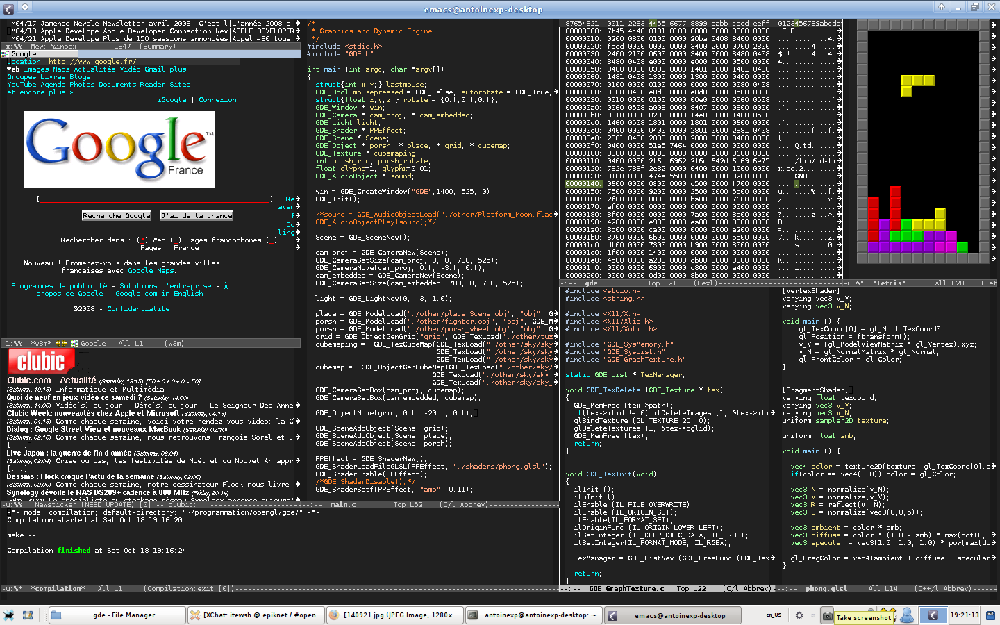

Emacs คืออะไร
Emacs มีชื่อเต็ม ๆ คือ Editor MACroS นั่นมีความหมายว่า emacs นั้นเป็น editor ที่รวบรวมมาโคร (macro) มาใช้เพื่อเป็น editor ในการแก้ไขข้อความ
Emacs นั้นมีหลาย distribution
Distribution นั้นเป็นเหมือนการรวมรวมการปรับแต่งเป็นแพ็คเกจไว้ให้ผู้ใช้สามารถใช้งานได้ทันทีเหมือนติดตั้ง emacs distribution นั้น ๆ ซึ่งแต่ละ distribution ก็จะมีความแตกต่างในการปรับแต่ง (configuration หรือ customization) แตกต่างกันไปตามผู้พัฒนา
XEmacs
ErgoEmacs
เพิ่มเติมสำหรับคำว่า distribution นั้น เรามักจะใช้กับ Linux เช่นกัน หรือก็คือ Linux นั้นมีหลาย distribution ให้เลือกติดตั้ง ไม่ว่าจะเป็น Ubuntu, Linux Mint, Debian, Red Hat และ Elementary OS เป็นต้น ซึ่งแต่ละ distribution นั้นก็จะมีทั้งหน้าตาและการใช้งานแตกต่าง แต่ถูกพัฒนามาจากต้นแบบเดียวกันหรือก็คือ Linux แต่ยังมี distribution อีกนับร้อย ซึ่งบาง distribution อาจจะเรียกเป็น base ของ distribution อื่น เช่น Ubuntu-Based หรือ Debian-Based เป็นต้น
หน้าตาของ emacs ที่ถูกปรับแต่งให้สวยงามแล้ว
Emacs
Emacs เป็น operating system (OS) ให้คุณได้
Emacs-OS
มีคำกล่าวว่า emacs นั้นแทบจะเป็น OS (operating system) ตัวหนึ่ง เพราะสังเกตได้จากภาพด้านบนนี้ จะเห็นได้ว่า emacs สามารถเป็นได้แม้กระทั่ง web browser ที่ใช้ในการท่องเว็บ (หน้าต่างด้านซ้ายมือของรูปกำลังเข้าเว็บไซต์ Google France) หรือแม้กระทั่งเล่นเกม Tetris ได้ (หน้าต่างด้านขวามือสุดของรูป) เป็นต้น ซึ่งถือว่าครบครันมาก ๆ ในด้านการของใช้งานโดยไม่จำเป็นต้องสลับหน้าต่างไปมาระหว่างโปรแกรมอื่น ๆ